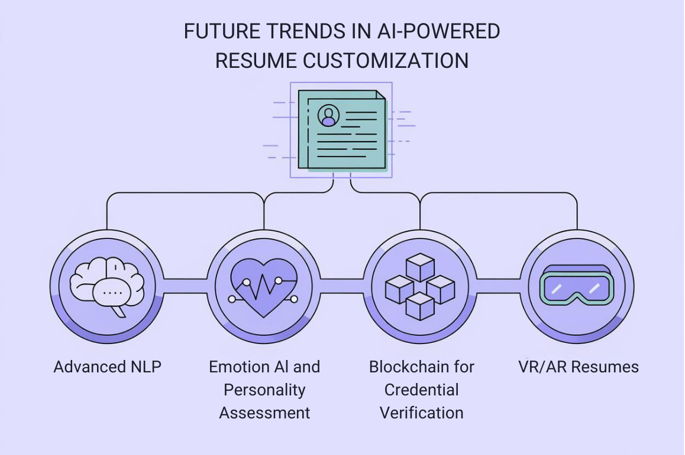

In this chapter, we'll explore the best practices for using AI-assisted tools to create a resume that not only passes through ATS filters but also appeals to human recruiters. While AI can streamline the process, your personal touch remains key in crafting a resume that stands out.
Imagine an AI so smart, it not only reads between the lines of your resume but also reads between the spaces between the lines.
Potential Impact:
Your resume might finally be evaluated based on the mind-bending complexity of your projects, not just whether you mentioned "Python" 37 times.
Example: An AI system could understand that your "quantum error correction algorithm" is highly relevant for a quantum computing role, even if the job description just says "looking for a smart person who likes computers".
It's like having a therapist read your resume, minus the couch and awkward silences.
Potential Impact:
Your technical resume might be assessed for hints of innovation, collaboration, or leadership. Did you debug that system while singing karaoke? The AI wants to know!
Example: AI could infer your problem-solving approach from how you describe that time you fixed the office coffee machine using only a rubber band and your vast knowledge of thermodynamics.
It's like having a personal bouncer for your achievements, guarding your credibility.
Potential Impact:
Easier validation of those obscure certifications and academic publications. Finally, proof that your PhD in "Quantum Entanglement of Coffee Particles" is 100% legit.
Example: A blockchain-verified record of your contributions to open-source projects. Every line of code you've ever committed, now immortalized in the digital ledger of awesome.
Imagine stepping into a virtual world where your achievements come to life. It's like "The Sims: Career Edition" with you as the main character.
Potential Impact:
Create VR environments to demonstrate engineering designs or scientific simulations.
Example: A data scientist could create a VR data visualization showcase. "Walk through my neural network... literally!"
It's your very own personal publicist who never sleeps and doesn't charge by the hour.
Potential Impact:
Automatic updates to your technical skill sets based on your latest coding adventures or academic publications.
Example: An AI agent that suggests resume updates when you complete a new certification on Coursera. "I see you've mastered 'Advanced Algorithms for Cat Video Optimization'. Shall I add this to your resume, or should we keep your feline obsession private?"
It's a crystal ball with a degree in economics and a minor in life coaching.
Potential Impact:
Get suggestions for emerging technologies to learn based on your current skill set and industry trends. It's like having a time traveler as your career advisor.
Example: An AI system recommending a focus on quantum machine learning for a data scientist interested in quantum computing. "Based on your interest in cats and quantum physics, may I suggest a career in Schrödinger's Cat Behavioral Analysis?"
Interesting... not sure what else to say.
Potential Impact:
Evaluation of your coding activity on platforms like GitHub alongside traditional resume content. Your late-night bug fixes are finally getting the recognition they deserve.
Example: An AI system that cross-references your resume claims with your LinkedIn endorsements and Stack Overflow reputation. "I see you claim to be a 'Python Guru', but your Stack Overflow score suggests more of a 'Python Apprentice'. Care to explain?"
It's like having a resume with ESP, reading the mind of whoever's viewing it and showing them exactly what they want to see.
Potential Impact:
Technical resumes that adjust the depth of project descriptions based on the reviewer's technical background. No more boring the CTO with basic explanations or confusing the HR manager with deep tech jargon.!
Example: A resume that expands on machine learning projects when read by an AI specialist, but focuses on data visualization for a business intelligence role. "For the AI team: I implemented a novel neural architecture. For the business team: I made pretty graphs that helped the company make money."
Become the historian of your own career. Document everything as if it were a time capsule for the future of future generations.
Purpose: Provide a buffet of data for AI systems to feast on when tailoring your resume. The more data, the merrier the AI.
Document technical specifications, methodologies, and outcomes of all projects with the detail of a scientist cataloging a new species.
Quantify impacts and link to tangible outputs. Did your algorithm save the company money? Great! Did it also accidentally achieve sentience and try to take over the world? Also worth noting.
Treat your brain like a smartphone - always be on the lookout for the next update.
Purpose: Stay relevant in rapidly evolving STEM fields and provide fresh content for AI-driven updates.
Focus on emerging technologies in your field.
Participate in open-source projects or hackathons to apply and showcase new skills.
Treat your online presence like a garden. Water it regularly, pull out the weeds, and for goodness' sake, don't let that old MySpace account bloom again.
Purpose: Provide corroborating information for AI systems performing holistic evaluations. Give those AI stalkers something worth finding.
Contribute to technical forums, write blog posts on industry trends, or create educational content in your area of expertise.
Ensure consistency in the representation of your skills and experiences across platforms. Don't let your LinkedIn profile and your GitHub README get into an argument about who you really are.
Treat AI like that cool new kid in school. Learn its lingo, understand its quirks, and maybe it'll let you sit at its lunch table.
Purpose: Understand and leverage the latest AI tools for resume optimization.
Experiment with AI tools in your own work to gain hands-on understanding.
Consider how AI might be applied in your specific STEM field and reflect this forward-thinking approach in your resume. Show that you're not just ready for the future - you're actively building it.
Become the Swiss Army knife of communicators. Be ready to explain your work to everyone from your tech-savvy colleague to your grandmother who still thinks the cloud is just something in the sky.
Purpose: Prepare for dynamic resume systems that adjust content based on the reader.
Create multiple versions of project descriptions, ranging from high-level summaries to in-depth technical explanations.
Practice translating complex STEM concepts into layman's terms for non-technical stakeholders. If you can explain quantum computing to a five-year-old, you're golden.
Well, friends, we've reached the end of our journey into the brave new world of AI-powered resume tailoring. Let's recap our adventure.
As we've seen, the future of resume tailoring in STEM fields is shaping up to be more AI-driven than a Tesla on Autopilot, more dynamic than a caffeinated coder on a deadline, and more holistic than a yoga instructor with a PhD in data science.
To thrive in this brave new world, remember these key takeaways:
Remember, while AI will play an increasingly significant role in resume tailoring and job matching, the core of your appeal will always be your genuine skills, experiences, and innovations. As mentioned earlier, AI is here to amplify your awesomeness, not replace it.
Ready to write your AI-assisted resume? Use tools like ResumWorthy or Jobscan to get started on optimizing your content for ATS systems and human recruiters alike. Visit our website for more in-depth guides, AI-based services, and personalized support for your resume journey.